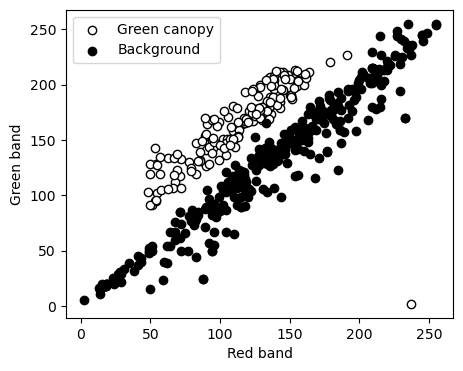
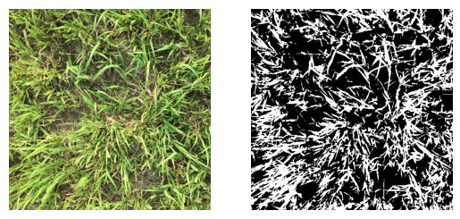
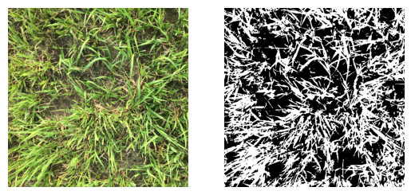
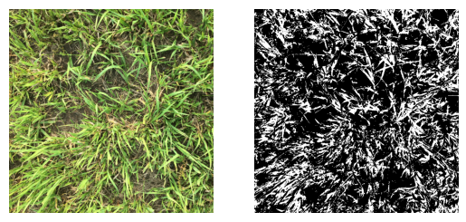

# Import modules
import numpy as np
import pandas as pd
import matplotlib.pyplot as plt
from sklearn.linear_model import LogisticRegression
from sklearn.linear_model import SGDClassifier
from sklearn.ensemble import RandomForestClassifier94 Machine learning supervised classification
Keywords
logistic regression, stochastic gradient descent, random forest, machine learning, image analysis
Machine learning classification aims at categorizing data points into distinct classes based on their features. Perceptron neural networks and random forest classifiers are two popular approaches for this task.
Logistic regression is a statistical model used for binary classification. It estimates the probability that a given input belongs to a certain class using a logistic function.
Stochastic gradient descent is commonly used to train machine learning models like perceptron neural networks and logistic regression. It iteratively updates the parameters of the model by computing the gradient of the loss function on a small subset of the training data (a mini-batch) and adjusting the parameters in the opposite direction of the gradient to minimize the loss.
Random forest classifiers are ensemble learning methods that combine multiple decision trees to improve classification accuracy. Each tree is trained on a random subset of the data and features, and the final classification is determined by a majority vote or averaging of the individual tree predictions.
In this example we will use red, green, and blue pixels to classify green canopy cover. Data was collected using the pixlabel app
Read dataset of RGB data and labels
# Read training dataset
df = pd.read_csv('../datasets/pixlabel.csv')
df.head(3)| RECORD | FILENAME | LABEL | COL | ROW | TOTALCOLS | TOTALROWS | TIMESTAMP | R1 | G1 | B1 | |
|---|---|---|---|---|---|---|---|---|---|---|---|
| 0 | 1 | example.jpg | canopy | 858 | 208 | 917 | 687 | 2024-03-29T04:59:28.723Z | 237 | 2 | 2 |
| 1 | 2 | example.jpg | canopy | 874 | 223 | 917 | 687 | 2024-03-29T04:59:36.440Z | 110 | 159 | 129 |
| 2 | 3 | example.jpg | canopy | 777 | 213 | 917 | 687 | 2024-03-29T04:59:41.010Z | 135 | 184 | 145 |
# Create index for each label
idx_canopy = df['LABEL'] == 'canopy'
idx_background = df['LABEL'] == 'background'# Create figure to inspect data
plt.figure(figsize=(5,4))
plt.scatter(df.loc[idx_canopy,'R1'], df.loc[idx_canopy,'G1'],
facecolor='w', edgecolor='k', label='Green canopy')
plt.scatter(df.loc[idx_background,'R1'], df.loc[idx_background,'G1'],
facecolor='k', edgecolor='k',label='Background')
plt.xlabel('Red band')
plt.ylabel('Green band')
plt.legend()
plt.show()
Load image to classify
# Read image
RGB = plt.imread('../datasets/images/grassland.jpg')
R = RGB[:,:,0]
G = RGB[:,:,1]
B = RGB[:,:,2]
X_img = np.column_stack( (R.flatten(), G.flatten(), B.flatten()) )# Create function to cmpute green canopy cover
compute_gcc = lambda I: round(np.sum(I)/I.size*100,1)Define inputs and outputs
# Gather inputs in float data type
X = df[['R1','G1','B1']].values/255
# Define output as a binary response
y,unique_labels = df['LABEL'].factorize(sort=True)Train Logistic Regression
# Fit Logitsitc Regression model
LR = LogisticRegression(random_state=0).fit(X, y)
# Compute mean accuracy on the training dataset
LR.score(X, y)0.902# Classifiy image
BW_LR = LR.predict(X_img)
BW_LR = np.reshape(BW_LR, R.shape)# Create figure of classified image using Logisitc Regression
plt.figure()
plt.subplot(1,2,1)
plt.imshow(RGB)
plt.axis('off')
plt.subplot(1,2,2)
plt.imshow(BW_LR, cmap='binary_r')
plt.axis('off')
plt.show()
# Compute percent green canopy cover
print('Canopy cover using Logistic Regression:', compute_gcc(BW_LR), '%')Canopy cover using Logistic Regression: 37.7 %Train Stochastic Gradient Descent classifier
SGD = SGDClassifier(loss="hinge", alpha=0.0001, max_iter=200)
SGD.fit(X, y)SGDClassifier(max_iter=200)In a Jupyter environment, please rerun this cell to show the HTML representation or trust the notebook.
On GitHub, the HTML representation is unable to render, please try loading this page with nbviewer.org.
SGDClassifier(max_iter=200)
# Classifiy image
BW_SGD = SGD.predict(X_img)
BW_SGD = np.reshape(BW_SGD, R.shape)# Create figure of classified image using Logisitc Regression
plt.figure()
plt.subplot(1,2,1)
plt.imshow(RGB)
plt.axis('off')
plt.subplot(1,2,2)
plt.imshow(BW_SGD, cmap='binary_r')
plt.axis('off')
plt.show()
# Compute percent green canopy cover
print('Canopy cover using Stochastic Gradient Descent:', compute_gcc(BW_SGD), '%')Canopy cover using Stochastic Gradient Descent: 45.6 %Train Random Forest classifier
# Define Random Forest model
RF = RandomForestClassifier(n_estimators=20).fit(X, y)
RF.score(X,y)1.0# Classifiy image
BW_RF = RF.predict(X_img)
BW_RF = np.reshape(BW_RF, R.shape)plt.figure()
plt.subplot(1,2,1)
plt.imshow(RGB)
plt.axis('off')
plt.subplot(1,2,2)
plt.imshow(BW_RF, cmap='binary_r')
plt.axis('off')
plt.show()
# Compute green canopy cover
print('Canopy cover using Random Forest:', compute_gcc(BW_RF), '%')Canopy cover using Random Forest: 30.8 %